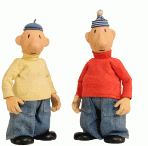

Događanja
POP ZOO DAMIRA HOYKE
Muzej Mimara otvara 24. siječnja izložbu umjetničkih fotografija Damira Hoyke POP ZOO. Više...
KOJA JE OVO DRŽAVA - Film, Komedija - Kino Europa
Film koji najbolje opisuje stanje u državi može biti samo jednog žanra – uz novu komediju apsurda Vinka Brešana zaboravit ćete sve što znate o Hrvatskoj jer stvarnost je puno gora i smješnija. Više...

MONARCHY - Tvornica kulture
Britanski electro pop duo Monarchy stižu u zagrebačku Tvornicu kulture u utorak, 12. veljače gdje će koncertno predstaviti svoje novo izdanje „Mid: Night“. Više...
CRVENA JABUKA
Omiljeni romantičari glazbene scene, s vječnom tematikom ljubavi, Crvena jabuka, u mjesecu ljubavi dolazi u zagrebački Boogaloo! Više...

A JE TO! - Kazalište Trešnja
Na daske Gradskog kazališta Trešnja stižu najsmotaniji i najsimpatičniji prijatelji Pat i Mat. Predstava “A je to!”, prema poznatom animiranom serijalu, oživljava ponešto zaboravljene vrijednosti, ponajviše “uradi sam” duh kojeg je nekoć posvud bilo. U vrijeme instant-rješenja kad kupujemo samo gotove proizvode koji kratko traju, pomalo su u zaborav pali kućni i ini “majstori” kakvi su bili Pat i Mat, glavni likovi “A je to!”. Više...